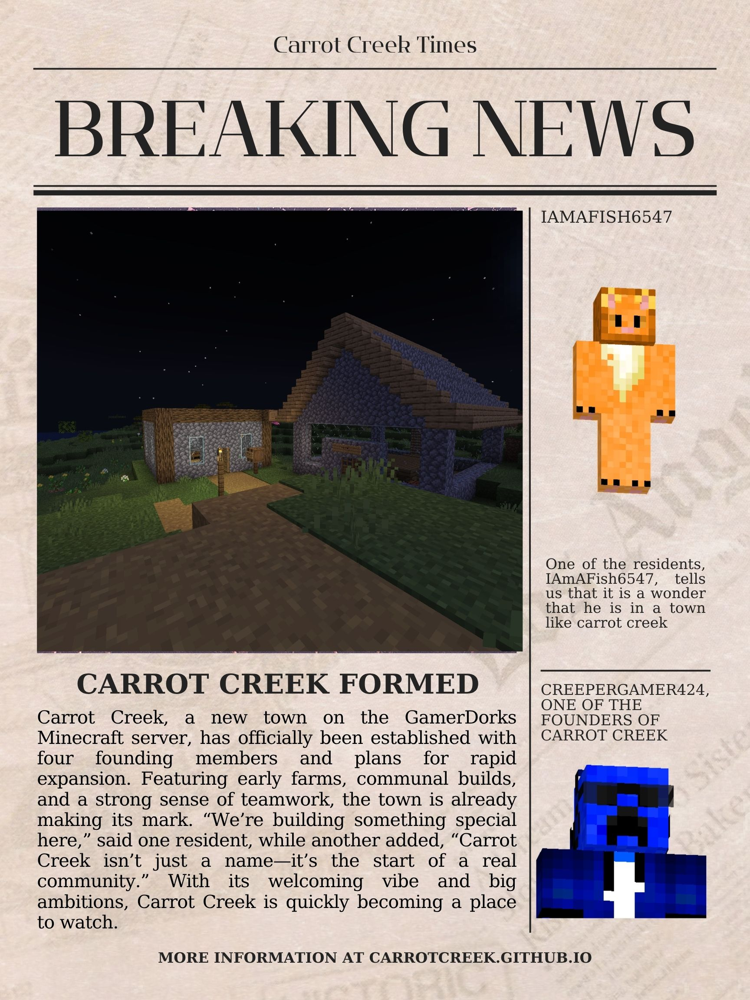

New Cow Found
August 8, 2025

A new cow has been found and captured in the cow pen in Carrot Creek.
Fresh News from the Heart of the GamerDorks Server
August 8, 2025
A new cow has been found and captured in the cow pen in Carrot Creek.
August 7, 2025
Carrot Creek, a new town on the GamerDorks Minecraft server, has officially been established with four founding members and plans for rapid expansion.